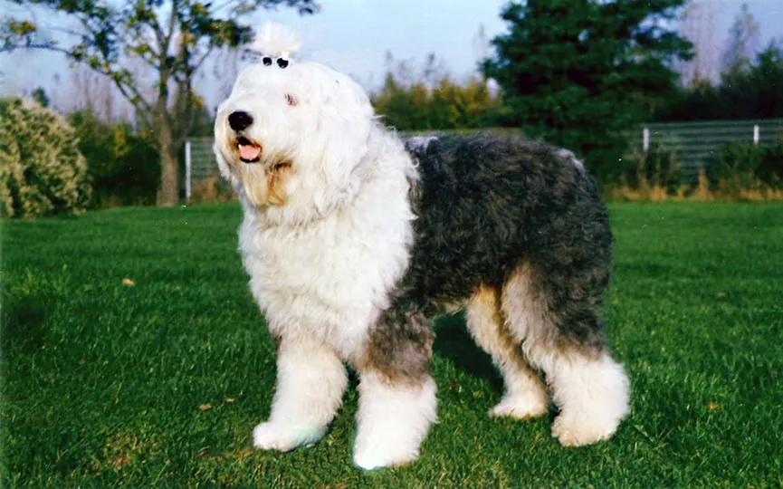
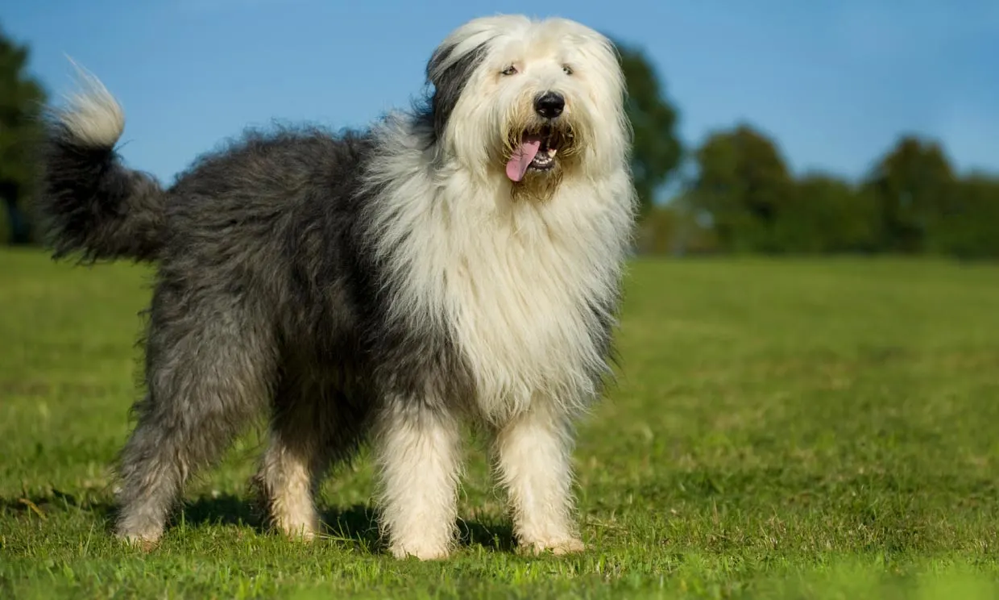
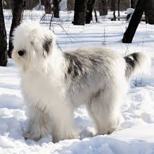
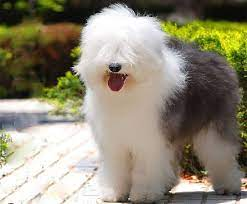
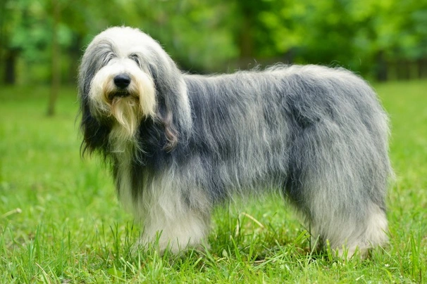
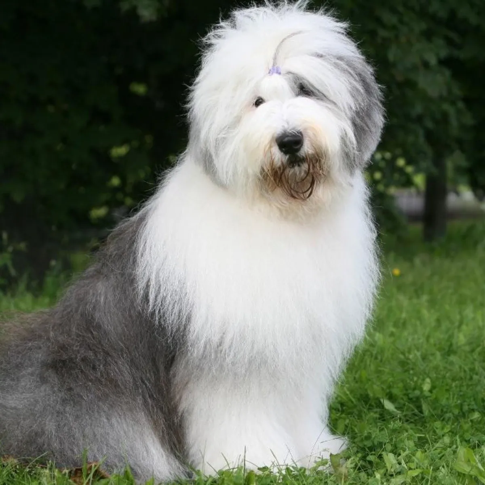

El Bobtail o antiguo pastor inglés es ampliamente reconocido por su pelaje largo y lanoso que recubre su gordito cuerpo. Parece que tiene los ojos completamente cubiertos por el pelo, pero tiene una vista perfecta. En cuanto al color, esta raza puede presentar cualquier tonalidad de gris o azul con o sin manchas. Los machos adultos miden 61 cm o más y pesan, como mínimo, 36 kg. Las hembras adultas miden 56 cm o más y pesan un mínimo de 30 kg.
|  |  |  |
|  |  |  |